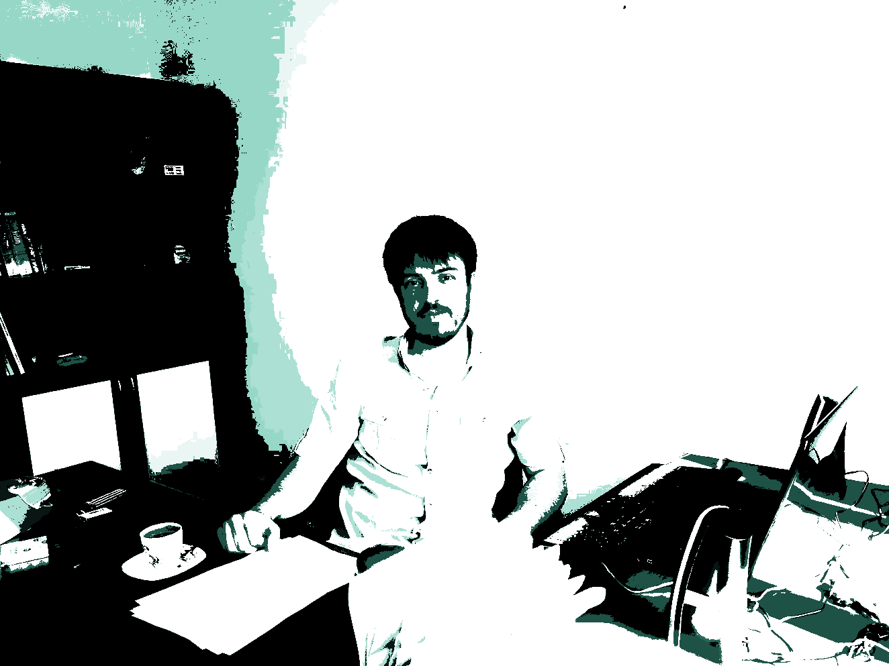

Hi!
Welcome to my website. I am Yusuf Sansarkan, a Doctor of History of Islamic Sects.
My academic journey began at Dicle University, where I completed my undergraduate studies. I then pursued my master’s and PhD degrees at Bursa Uludağ University, where I developed a deeper understanding of the complexities of Islamic sects and their historical contexts.
As a scholar, I am committed to advancing knowledge and understanding of Islamic civilization and its various manifestations. I am currently serving as the Editor-in-Chief of the Journal of Islamic Civilization Studies, a peer-reviewed publication that showcases cutting-edge research in the field.
I am also a faculty member at Kütahya Dumlupınar University, where I work as an Assistant Professor. My academic responsibilities include teaching and research, and I am dedicated to providing a supportive and stimulating learning environment for my students.
In addition to my academic pursuits, I am also passionate about technology and its potential to empower individuals and communities. I am an advocate for Gnu/Linux and open-source software, and I believe that these technologies have the power to democratize access to information and promote digital literacy.
On this website, you can find information about my research interests, publications, and academic activities. I also plan to share my thoughts and reflections on various topics related to my studies, and technology.
Thank you for visiting my website. I hope you find the information and resources here useful and informative.